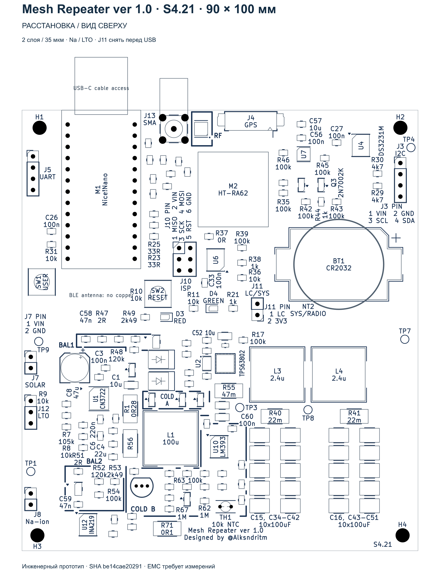
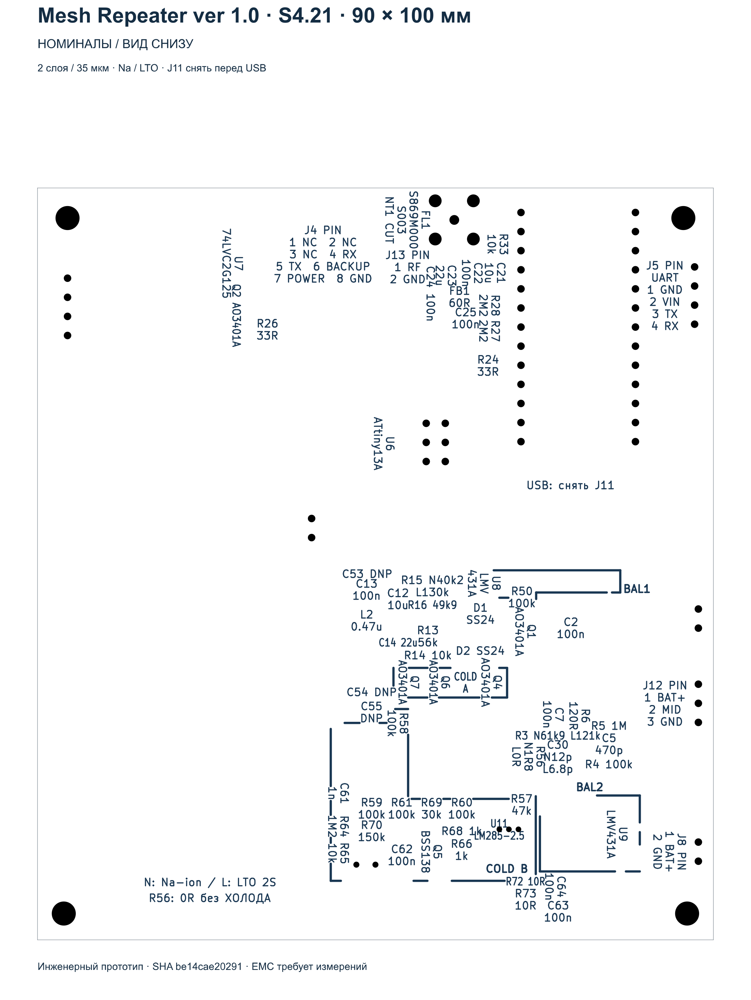
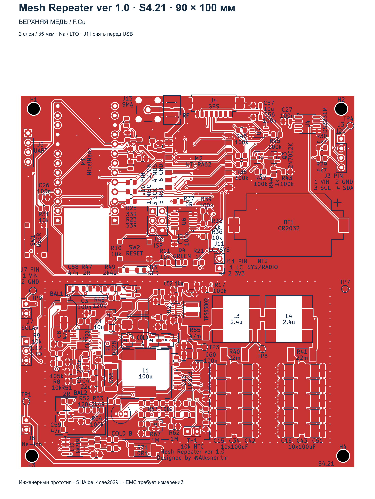
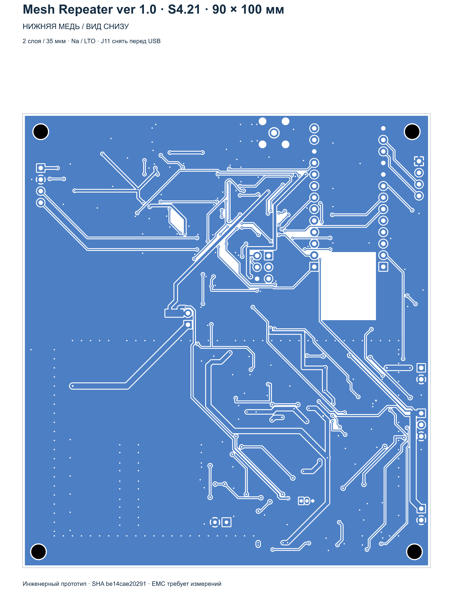

18.10.2026. Проверены и исправлены сохранённые ручные правки. Два слоя, 90×100 мм; рамка SH1 и тестпоинт TP6 не устанавливаются.
Открыть актуальную плату · Схема · Полный проект KiCad ZIP · BOM S4.21
ERC/DRC, неприсоединённые цепи, паритет схемы и исключения: 0. Независимые проверки: 29/29; питание: 14/14. Все 111 земляных площадок и все земляные переходы соединены в одну сеть.
| Ручные изменения | Сохранены сокращённые пользовательские маршруты и положения всех компонентов, кроме согласованного возврата M2 по X с 47,5 на 48 мм. |
|---|---|
| Модем | Возврат на прежнее место устранил короткие замыкания и нарушения зазоров возле площадок. Переход RADIO_RST перенесён на (41,2;17) мм: зазор отверстия до масочного окна M2.4 теперь 0,150 мм. |
| Земля | Восстановлен отсутствовавший B.Cu GND. Удалены четыре микросегмента, целиком лежавшие в меди существующих земляных переходов. Один GND-переход перемещён на 0,05 мм в конец существующей диагонали, чтобы сохранить прямой заход в центр. Тихая земля обратной связи и локальные силовые возвраты сохранены. |
| Дубли меди | Удалены 11 наложенных сегментов, медь которых полностью содержалась в оставшихся дорожках той же цепи и слоя. |
| Локальные соединения | Тупик BAT_SYS доведён до второго силового перехода. Удалены три перехода SDA/BAT_SYS, подключённых только с одной стороны. Исправлены заходы в центры переходов; три мелкие ступеньки SCL, WDT_MISO и MODE упрощены. |
| Схема и состав | SH1 и TP6 удалены из текущей схемы, модели и BOM. Удалены их лишние подписи и примечание к крышке. Остальные 172 позиции, значения и электрические цепи сохранены. |
| Питание | Подтверждены цепи через C53/C63, Kelvin R71/CN3722, питание модема и разделение ветвей SYS/RADIO через NT2. Обе стороны земли физически соединены. |
| Подписи | Сохранены лицевые подписи и точные обратные проекции. Минимум 1,0 мм по высоте и 0,15 мм по штриху; пересечений обратных подписей нет. |
Производственный экспорт S4.21: чистый ZIP Gerber/Excellon · параметры заказа Резонит · схема PDF. Физические EMI, тепловые и нагрузочные измерения этим аудитом не заменяются.




Сохранённый исходник ручных правок: 5c211a0fb528bb8553bd018f4250e5f867945308a4edae45bc9d9cd1282bd787
Исправленная плата: be14cae202912ebb00e5dc758b2eae04cbe6733d4cb73df00044fdb03670fab3
Независимый итоговый протокол · Силовые проверки · Связность земли · Точный журнал правок